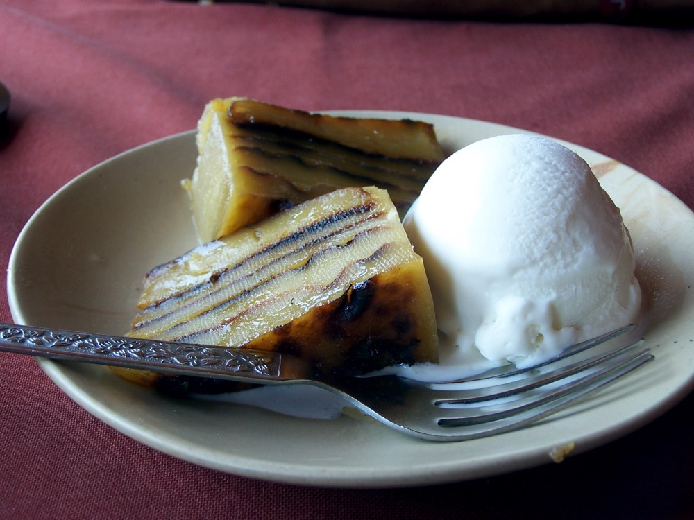

Contains: dairy, gluten
Ingredients
Quantities for 8.
- 400ml thick Coconut Milk
- 8 yolks Eggs
- 1.5 cups Maida
- 1.5 cups Sugar
- 200g, melted Ghee
- 1/2 tsp Nutmeg
- 1/2 tsp Cardamomoptional
- a pinch Salt
Cookware
oven
Before you start
- Bebinca is a test of patience: each layer is baked separately, and a traditional one runs to sixteen. Seven still tastes right.
- Ghee is brushed between layers. That fat is what lets them separate cleanly when sliced.
Method
- Whisk the yolks with the sugar until pale, then beat in the coconut milk, flour, nutmeg, cardamom and salt to a smooth, pourable batter. Rest 30 minutes.
- Heat the oven to 180C with the grill element on. Brush a deep tin generously with ghee and warm it.
- Pour in a thin ladle of batter (about 5mm) and grill 8-10 minutes until the top is browned and set.Browned, not merely set. The colour contrast between layers is the whole look.
- Brush the baked layer with ghee, pour the next ladle over, and grill again. Repeat for at least seven layers.
- Cool completely in the tin, then turn out. Slicing warm will tear the layers apart.At least 3 hours. Overnight is better.
- Serve at room temperature in thin wedges.
Storage
Keeps a week in an airtight tin at room temperature and improves as it settles. Do not refrigerate. The ghee sets hard and the texture goes waxy.
Nutrition Good estimate
| Per serving180 g | Per 100 g | |
|---|---|---|
| Calories | 613+ kcal | 340+ kcal |
| Protein | 9.1+ g | 5+ g |
| Carbohydrate | 57.4+ g | 32+ g |
| of which sugars | 37.7+ g | 21+ g |
| Fibre | 0.7+ g | 0+ g |
| Fat | 40.0+ g | 22+ g |
| of which saturated | 26.4+ g | 15+ g |
| of which unsaturated | 11.3+ g | 6+ g |
The + means ingredients given to taste rather than by weight are counted as zero, so the true figure is a little higher than shown. Worked out from the listed quantities; most of the ingredient list could be weighed. Ingredients given to taste rather than by weight are counted as zero, so the real figure is a little higher than this. The + says so. Estimated from raw ingredients using USDA FoodData Central. Cooking changes are not modelled, and added salt is excluded, so sodium is not given.
Recipe v1.0.0, last updated 2026-07-31. Curated for Khaana and kept under version control.